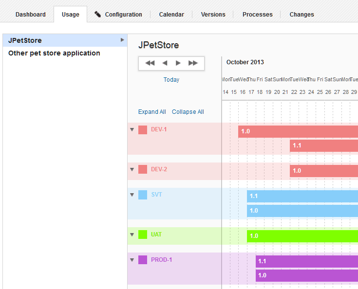

Tracking environment inventory for components
You can track the environment inventory for each component by clicking the component and then going to the Usage tab.
The calendar on this tab shows the deployment request history and state of the selected component. Select an application at the left side of the page, and the calendar shows the deployment history of that component. For each environment, the calendar shows bars that represent the different versions of the component. These bars show when the different versions of the component were installed to that environment or when there was an attempt to install the component to that environment.
Important: The Usage tab might not show the version of the component that is deployed. For example, if a deployment fails, the tab includes the component version that was part of the attempted deployment. It does not show the deployed version. Because a component version might not be deployed in an environment, this tab does not show compliancy.
For example, the following figure shows the deployment history for a component, including deployment requests that failed. Two different versions of the component were part of deployment requests to five different environments. The DEV-1 environment requested the deployment of version 1.0 of the component on October 16. Then, it requested the deployment of version 1.1 of the component on October 22. Because these are incremental versions, the bars overlap when both versions are deployed at the same time.

Parent topic: Component versions